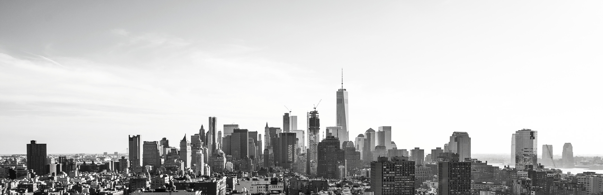
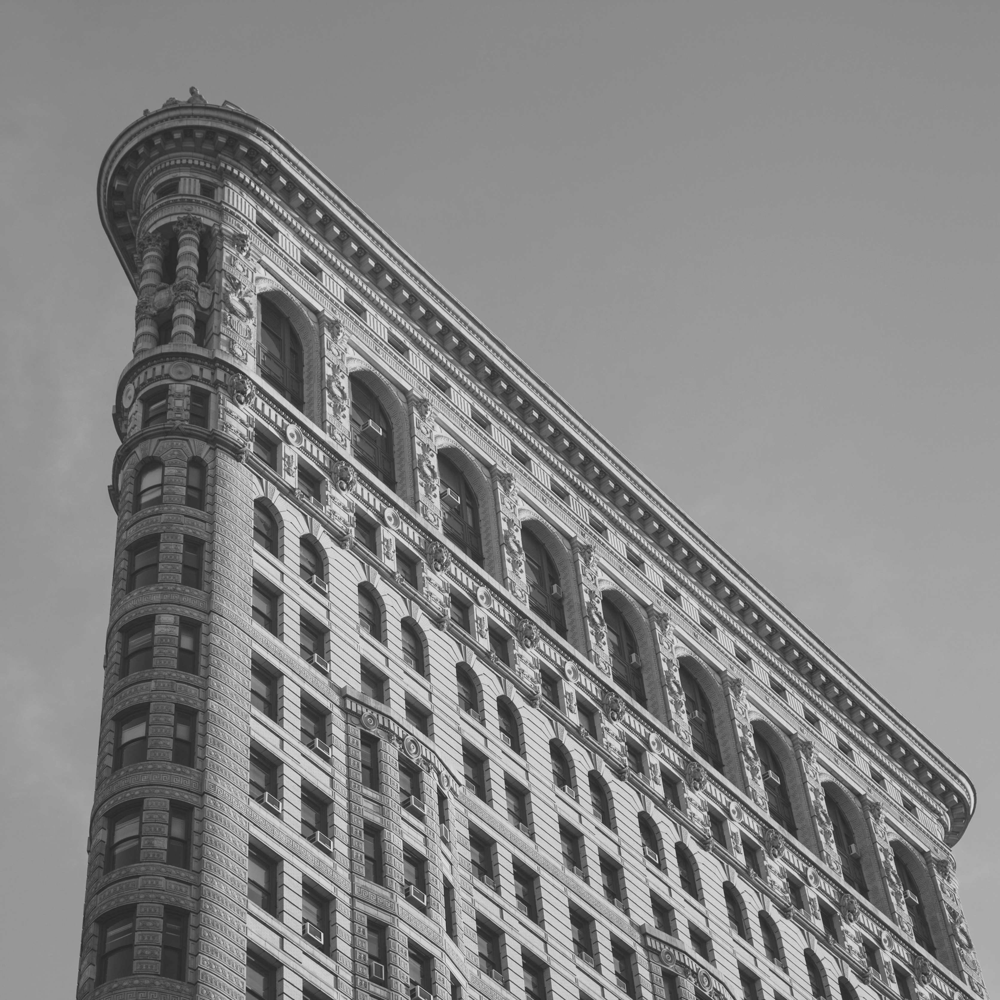
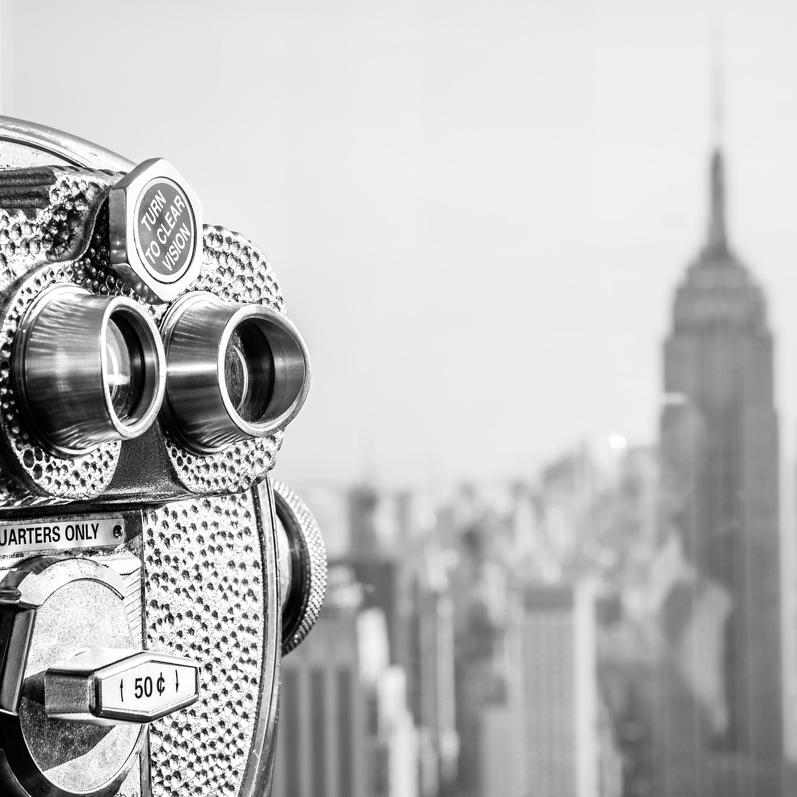

You can enjoy many of the most popular places without paying:Brooklyn Bridge, Rockefeller Center and Central Park are just some of them.

You must understand that taxes in Manhattan are higher than in the rest of NYC. You will find the same products at a little higher cost. You can solve this buying in Queen, Bronx, Brooklyn and Staten Island.
One of the best ways to save money on food in NYC is to eat in the small street stalls. They have a lot of options food and you do not have to leave tips.
You may be used to driving in your country, but this city has an excellent train system that will take away a headache with traffic.
